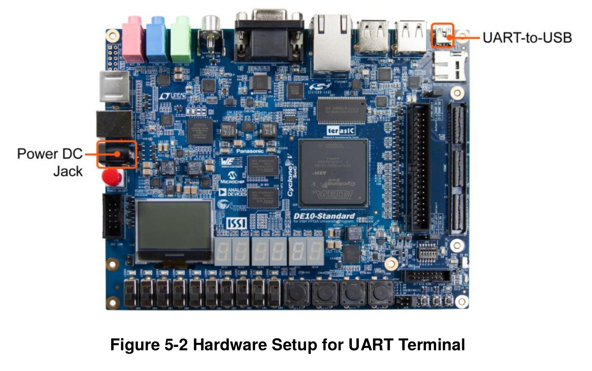

Tutorial 4 - HPS - Linux embarcado¶
2020-2
- Material atualizado.
Danger
Nesse tutorial mexemos com gravação de disco, se errar o dispositivo pode corromper seus arquivos!!!
Vamos nessa etapa executar um linux de exemplo fornecido pela Terasic, para isso, será necessário programarmos um SDcard com a imagem. Vamos executar os seguintes passos para isso:
- Download e gravar a Imagem da Teraisc (
.iso) no SDcard - Insira o SDCard na FPGA
- Conecte o USB na porta UART (perto da porta Ethernet)
- Conecte a alimentação
- Conecte-se ao terminal via UART
- Executar comandos
Começando¶
Para seguir esse tutorial é necessário:
- Hardware: DE10-Standard e SDCard
- Softwares: Quartus 18.01
- Entrega no git: pasta
Lab4_HPS_Infra
Imagem padrão (sdcard)¶
Utilizaremos uma imagem (.iso) já gerada para o ARM da placa e que já possui todo o sistema necessário para executar o linux no HPS (incluindo boot loader, kernel e filesystem), essa imagem foi criada com a distribuição Linaro.
Download
Faça o download da imagem Linux Console (Kernel 4.5) do site da terasic: - "Linux BSP (Board Support Package): MicroSD Card Image"
Extraia o arquio de10_standard_linux_console.img do arquivo zipado, esse .img é uma cópia bit a bit do que deve ser salvo no SDCard. Agora temos que copiar o img para o cartão de memória.
Insira o cartão de memória no computador
- Use o adaptador fornecido.
Quando inserirmos um disco externo no linux o mesmo o associa a um 'device' na pasta /dev/, para sabermos qual o nome do device que foi atribuído ao SDcard, podemos usar o comando dmesg, que exibe o log do sistema operacional e nele podemos ver qual foi o último hardware detectado e qual device foi atribuído:
Cuidado, estou assumindo que nenhum dispositivo foi inserido após o SDcard
$ dmesg | tail
[ 4789.207972] mmc0: new ultra high speed SDR50 SDHC card at address aaaa
[ 4789.211680] mmcblk0: mmc0:aaaa SL16G 14.8 GiB
[ 4789.215857] mmcblk0: p1 p2 p3
[ 4988.443942] mmcblk0: p1 p2 p3
O dmesg possui o log que o meu SDCARD foi alocado ao: /dev/mmclk0, no seu linux pode ser outro nome!
Warning
Isso pode mudar de PC para PC!
Agora vamos transferir a .iso para o SDcard (isso é diferente de copiar o arquivo para o sdcard!)
Danger
Cuidado, se errar o dispositivo (no meu caso: of=/dev/mmcblk0) pode acontecer coisas muito ruins com os seus dados
$ sudo dd bs=4M if=de10_standard_linux_console.img of=DEVICE conv=fsync status=progress
$ sync
dd
O comando dd executa uma cópia bit a bit de um arquivo de entrada input file: if para um output file: of
O comando sync é necessário para que o kernel faça um flush do cache escrevendo realmente no SDCard todos os dados que foram endereçados a ele. Essa etapa pode ser um pouco demorada.
Agora basta montar no seu linux o SDCard recém escrito e devemos ter duas partições visíveis:
- 524 MiB: FAT32
- Script de configuração do uboot; Kernel comprimido; Device Tree Blob file
- u-boot.scr; zImage; socfpga.dtb
- 3,3 GiB:
- Filesystem (
/)
- Filesystem (
E outra partição que não é visível (contém o preloader e o uboot), para visualizar:
$ sudo fdisk -l /dev/mmcblk0
...
Device Boot Start End Sectors Size Id Type
/dev/mmcblk0p1 4096 1028095 1024000 500M b W95 FAT32
/dev/mmcblk0p2 1028096 7376895 6348800 3G 83 Linux
/dev/mmcblk0p3 2048 4095 2048 1M a2 unknown
...
Note que a partição 3 (mmcblk0p3) é do tipo unknown (a2) e possui 1M de espaço. É nela que temos salvo o preloader e o uboot.
Success
Agora remova o SDCard e o coloque na FPGA
USB - UART¶
A porta UART-to-USB é um conector que possibilita acessar a saída serial do HPS via porta serial. No linux o driver é reconhecido automaticamente, no Windows será necessário instalar manualmente o driver da serial..

Uma vez conectado no linux host, verificamos que o mesmo foi mapeado para um dispositivo do tipo serial (no meu caso com nome ttyUSB0):
$ dmesg | tail
....
[80473.426308] ftdi_sio 1-2:1.0: FTDI USB Serial Device converter detected
[80473.426333] usb 1-2: Detected FT232RL
[80473.426456] usb 1-2: FTDI USB Serial Device converter now attached to ttyUSB0
...
Warning
Isso pode mudar de PC para PC!
Para conectarmos nessa porta, precisamos usar um programa do tipo: emulador de terminal. No caso iremos utilizar o screen (verificar se possui instalado). Note que o comando a seguir deve ser modificado para o device (/dev/ttyxxx) na qual o seu linux associou a porta UsSB-Serial, extraído do dmesg.
$ screen /dev/ttyUSB0 115200,cs8
Tip
Para sair do terminal: ctr+A : quit
Tip
Se você usa um editor (emacs/ vscode/ ...) procure por plugins que fazem a conexão serial (serial-term), ai não precisa usar o screen.
Linux¶
Faça o loggin no linux:
- user:
root - pass:
Legal! Vamos agora descobrir como criar programas para esse Linux!